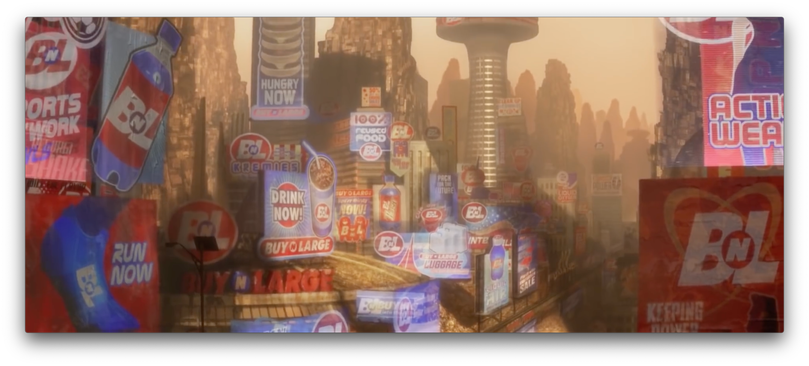

Les publicités polluent, découvrez comment et pourquoi.
Ne vous-êtes pas reconnu? La surconsommation?
Les écrans?
Vous êtes coupables.
Ne vous êtes-vous pas reconnus ? La surconsommation ? Les écrans ?
Vous pensez maintenant que je vais simplement vous parler de la pollution pointée du doigt dans WALL-E, qui
implique des ordures ou des mégots de cigarettes laissés dans la rue. Un autre problème est bien plus
présent aujourd’hui, et nous n’en tenons pas compte !
Que vous le vouliez ou non, nous nous rapprochons petit à petit du quotidien des humains du film WALL-E,
nous devenons tous dépendants des technologies.

Écran publicitaires toujours actifs (Pixar)
WALL-E qui est cependant imperturbable, parcourt des centaines de panneaux d’affichage chaque jour,
soulignant le monopole qui a dévasté le monde. L’absurdité de ces écrans publicitaires est d’autant plus
soulignée ici car il n’y a plus personne sur la planète Terre, mais malgré tous les écrans restent allumés.
Vous faites le lien ?
Ici on fait directement le lien avec les écrans publicitaires dans les lieux publics qui restent constamment
allumés et qui est une forme de pollution numérique très courante dans notre vie quotidienne.
De plus lorsque l’on découvre où les humains habitent depuis des générations, on découvre un environnement
submergé d’écrans publicitaires.
Nouveau monde des humains (Pixar)
Ces écrans publicitaires que l’on retrouve dans notre quotidien ne sont pas nécessaires, ils sont énergivores
et produisent donc une forte quantité de CO2 tout au long de leur vie.
La plupart de ces écrans sont des écrans LCD, qui consomme 50% de plus que des écrans LED.
Ce gaspillage de ressources est d’autant plus évident que l’on sait que 2 annonceurs sur 3 en France
utilisent des écrans publicitaires.
WALL-E qui découvre les tablettes avec une interface remplie de publicités (Pixar)
La publicité est aussi présente sur nos appareils !
Comme dans WALL-E, vous aussi vous avez des publicités sur vos tablettes, téléphones et ordinateurs !
Vous aussi, lorsque vous naviguez sur le web, il y a toujours des annonces qui apparaissent sur les pages que
vous consultez ; on ne fait plus attention aujourd’hui, c’est devenu une habitude commune, mais
connaissez-vous leur impact sur l’environnement ?
Des annonces de plus en plus polluantes.
De nos jours, un format d’annonce s’est démocratisé, les vidéos : elles représentent 40% du poids de la page
web où elles se trouvent. De plus, en raison de leur qualité d’image, elles sont encore plus polluantes que
de simples images.
Ces pratiques auraient produit en France 14 millions de tonnes de CO2 en 2016,
autant que si un avion faisait 14
allers-retours Paris-New York ou
comme si on consommait
60 000 kWh d’électricité.
Mais parlons à l’échelle du
monde : en 2016, le total des émissions
de CO2 des pubs sur le web représentait 60 millions d’allers-retours en avion de Paris à New York.
Ne vous-êtes pas reconnu? La surconsommation?
Les écrans?
La publicité en ligne représente une consommation énergétique importante.
Parmi les nombreuses activités humaines dont on mesure désormais l’influence sur le réchauffement
climatique, l’économie numérique suscite une attention grandissante.
Si, avec des échanges tendant à être de plus en plus organisés sur la base d’infrastructures connectées
via Internet, cette
numérisation génère d’un point de vue économique des gains considérables, sur le plan énergétique,
pourtant, la facture apparaît chaque année plus élevée.
Certes, ces technologies ont rendu possible ou permis d’améliorer l’efficacité de certains services
(du covoiturage à la visioconférence). Mais ces gains sont largement excédés par la surconsommation de
ressources nécessaires à la fabrication des équipements, composés notamment de terres rares.
Par ailleurs, le fonctionnement de ces terminaux et des infrastructures dont ils dépendent représentent
une part croissante de la consommation d’électricité mondiale : 6 à 10 % actuellement, avec une
progression de 5 à 7 % tous les ans.
Un impensé énergétique
Apparue en 1994 avec la première bannière publicitaire en ligne, la publicité numérique représente
désormais plus de la moitié des investissements publicitaires dans le monde, dépassant ainsi les médias
traditionnels. Présente sur ordinateur et sur mobile, elle englobe principalement la publicité sur les
réseaux sociaux et applications, les bannières et vidéos, recherches sponsorisées, e-mails et
comparateurs. Ces publicités mobilisent l’énergie des terminaux, ainsi que de la bande passante sur les
réseaux de télécommunications.
Un calcul complexe
Toutefois, calculer la consommation énergétique que représente la publicité en ligne constitue un programme
de recherche hardi, tant l’infrastructure technique du web est complexe, les échanges imbriqués et les
intermédiaires nombreux. Les opérations d’allocation publicitaire, réalisées massivement et en permanence,
mobilisent des espaces de stockage, une capacité de calcul et de la bande passante dans des proportions
considérables mais difficilement mesurables.
L’une des études récentes les plus abouties estimait, non sans admettre une grande proportion d’incertitudes,
que la consommation mondiale en énergie de la publicité numérique se serait élevée en 2016 à 106
térawattheures (TWh).
À titre de comparaison, cela correspond à 1,5 fois la consommation annuelle (2016) d’électricité de la région
Ile-de-France. La même étude estime les émissions de CO2 de la publicité sur Internet à 60 mégatonnes en
2016, soit l’équivalent de 60 millions d’allers- retours Paris-New York en avion. À plus long terme, il
faudra ajouter à cet état actuel la croissance annuelle des flux de données, ainsi que le déploiement des
équipements individuels et d’infrastructures.
Au-delà de la publicité numérique, la numérisation des supports publicitaires traditionnels constitue
également un enjeu énergétique crucial. Les médias développent désormais leurs offres « numériques ».
L’affichage extérieur a par exemple entamé sa transition depuis plusieurs années en investissant l’espace
public à travers de nouveaux dispositifs d’affichage numériques.
Actuellement, les usagers du métro parisien voient ainsi le remplacement progressif des traditionnelles
affiches papier par des panneaux numériques énergivores. Leur
déploiement fait l’objet de critiques de plus en plus fortes sur son impact environnemental.
NOUS AVONS LES
SOLUTIONS
Découvrez la détermination de WALL-E dans sa lutte contre la pollution.